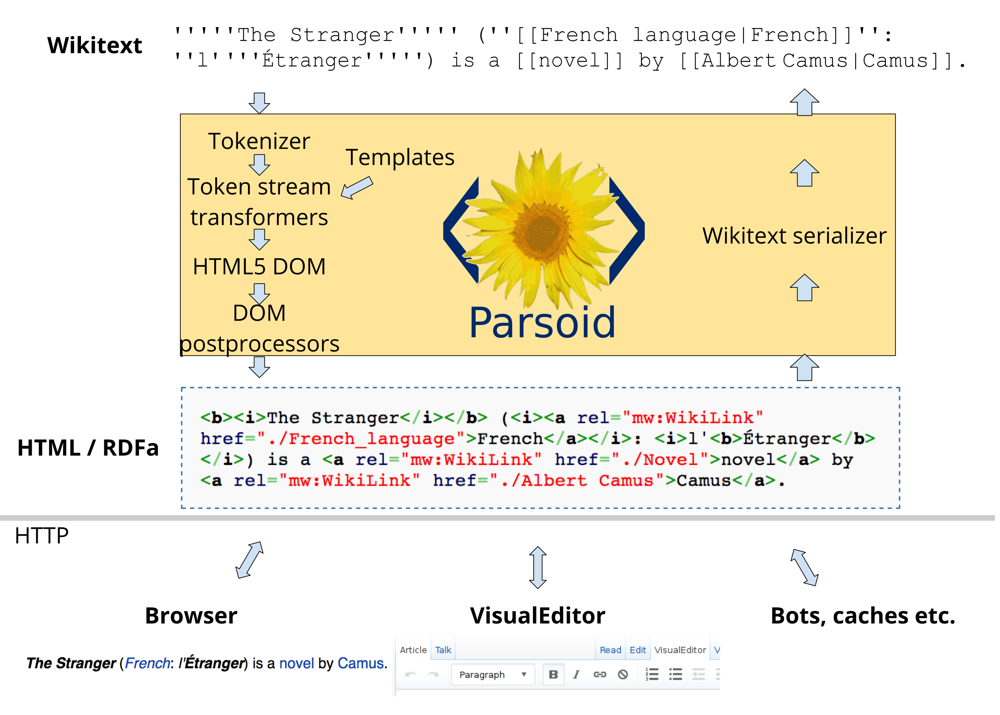
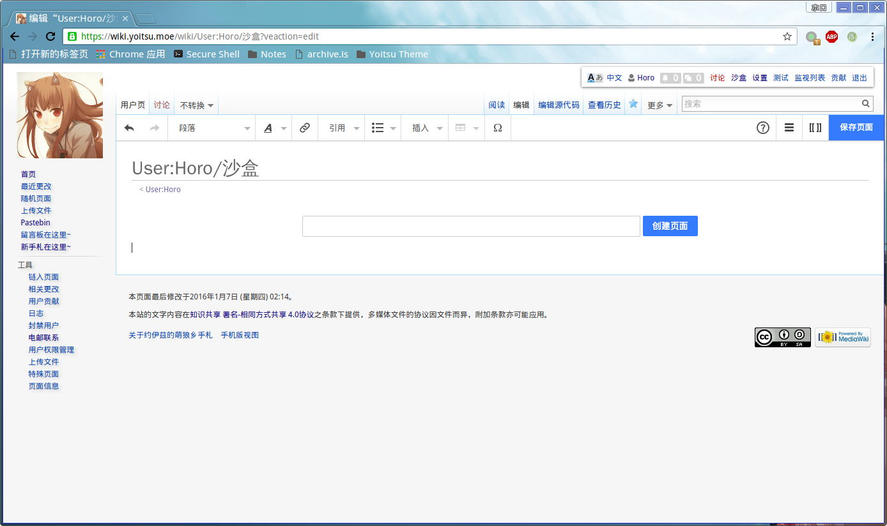

目录
为MediaWiki安装可视化编辑器
2015年01月17日 (Sat) ホロ Tech 显示源代码mediawiki notes
为MediaWiki安装来自 维基媒体基金会 的 可视化编辑器 .
连维基百科都要Hold不住啦~
许多新用户不会着手大幅度修改，而只是做些细节调整，不过仅仅阅读源代码就必须学标记语言了。当我们的用户在演示操作时，这把他们吓走了。
早在 2004 年，社群开始一再认识到必须采用更好的编辑方式。因为人们的请求，更重要的是他们的需要，所以我们开发了可视化编辑器。
Wiki 标记语言让新人害怕，这种程度会随着其他站点的迁离而加剧。如果我们不开发可视化编辑器，那么图表的走势会在接下来五年中变得更加糟糕。
所以他们才 痛定思痛 决定开发可视化编辑器么😂
开始之前-检查一下要求
可视化编辑器(下面就说VisualEditor呗~)还需要一个叫 Parsoid 的程序来承担把wiki标记转化成html的任务啦(看下图)~,所以需要服务器来运行它呐~
安装Parsoid(Ubuntu 14+ / Debian 7+ )
上游的指南在这(好好学英语呗~) https://www.mediawiki.org/wiki/Parsoid/Setup
Ubuntu和Debian系统的话直接添加MediaWiki.org的软件源然后通过apt安装就好了啦~
首先添加MediaWiki.org的GPG公钥:
sudo apt-key advanced --keyserver keys.gnupg.net --recv-keys 664C383A3566A3481B942F007A322AC6E84AFDD2
然后添加Parsoid源:
sudo echo "deb https://releases.wikimedia.org/debian jessie-mediawiki main" > /etc/apt/sources.list.d/parsoid.list
安装需要的软件包:
sudo apt-get update && sudo apt-get install curl parsoid
然后看下下面一节的内容修改一下配置文件呗~
其它系统?手动安装呗~
上游的指南在这(还是要好好学英语呗~) https://www.mediawiki.org/wiki/Parsoid/Developer_Setup
首先汝要装上Nodejs(>0.8,建议0.10或更新的版本呐~),还有git.
具体的安装方法为了避免降低正交性 (其实是系统太多不好写......),就麻烦汝自己去找了呐~
「呵。咱是贤狼，不是神呐。如果汝开始会期待起咱能够泄露天机给汝，那咱就得从汝眼前消失了呗。」
node --version # 如果是Debian或Ubuntu ,输入 nodejs --version
然后用git克隆版本库呗~
git clone https://gerrit.wikimedia.org/r/p/mediawiki/services/parsoid
用npm安装上相应的依赖:
npm install
然后看下面一节的内容修改一下配置文件呗~
修改配置文件
如果是通过软件源安装的,配置文件位于
/etc/mediawiki/parsoid/settings.js如果是通过git下载的,从parsoid目录中先复制一份样例出来呗~
cp localsettings.js.example localsettings.js
打开配置文件,找到这一段内容,然后改它~:
parsoidConfig.setMwApi({
// The "prefix" is the name given to this wiki configuration in the
// (deprecated) Parsoid v1 API.
prefix: 'localhost', // optional
// The "domain" is used for communication with Visual Editor
// and RESTBase. It defaults to the hostname portion of
// the `uri` property below, but you can manually set it
// to an arbitrary string.
domain: 'localhost', // optional
// This is the only required parameter:
// the URL of you MediaWiki API endpoint.
uri: 'http://localhost/w/api.php'
});
其中"uri"对应汝的wiki的api.php的位置,"domain"是汝的域名啦~."prefix"可以自己起一个(反正因为换了API也没用啦~,不过测试时可能用得到)
启动服务
从软件源安装的?
sudo systemctl start parsoid # Debian Jessie ,用Systemd启动
sudo service parsoid start # Debian Wheezy 或Ubuntu ,用init.d脚本启动.
如果汝不是通过远程访问执行的命令,可以在浏览器上打开
http://localhost:8142
来进行测试.试着加载
http://localhost:8142/汝设置的前缀/汝的wiki上的一个页面
试试呗~
用git安装的?
npm start
或者:
node bin/server.js
可以用screen一类的工具让Parsoid在后台运行~
如果汝不是通过远程访问执行的命令,可以在浏览器上打开
http://localhost:8000
来进行测试.试着加载
http://localhost:8000/汝设置的前缀/汝的wiki上的一个页面
试试呗~
修改监听地址便于远程测试
改这一段:
// Allow override of port/interface:
//parsoidConfig.serverPort = 8142;
//parsoidConfig.serverInterface = '127.0.0.1';
反注释最后一行并改成0.0.0.0,就可以通过
http://服务器的IP地址:8142
访问啦~
安装VisualEditor扩展
上游的指南在这: https://www.mediawiki.org/wiki/Extension:VisualEditor
首先从 这里 获得扩展然后上传到汝的wiki上的extensions目录呗~
然后修改汝的LocalSettings.php:
require_once "$IP/extensions/VisualEditor/VisualEditor.php";
// 反注释下一行来默认启用可视化编辑器
#$wgDefaultUserOptions['visualeditor-enable'] = 1;
// 反注释下一行来启用测试中的功能
#$wgDefaultUserOptions['visualeditor-enable-experimental'] = 1;
//在除了主名字空间以外的名字空间中也启用可视化编辑器(下面的例子是用户名字空间)
$wgVisualEditorNamespaces=array_merge($wgContentNamespaces,array( NS_USER ));
完整的设置选项可以在扩展页面上找到.
然后在汝的wiki上试试看呗~
 除非另有声明，约伊兹的萌狼乡手札的文字内容在
除非另有声明，约伊兹的萌狼乡手札的文字内容在